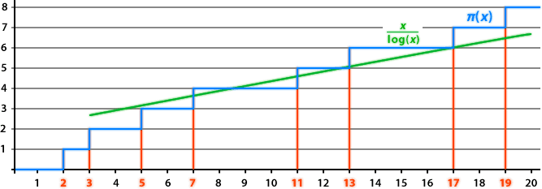

This article has moved…
 CONTINUE
CONTINUEDivisibility
If we can divide a number A by a number B, without remainder, we say that B is a factor or divisor of A, and that A is a multiple of B. For example, 7 is a factor of 21, 4 is a factor of 20 and 60 is a multiple of 12.
When thinking about number problems, it is often useful to find all the factors of a number. To do this, we should note that factors always appear in pairs. For example, 7 × 3 = 21, so 3 and 7 are a factor pair of 21. Let us write down these factor pairs, until we meet in the middle:
| 24 | | | 1 | 2 | 3 | 4 | 6 | 8 | 12 | 24 |
And these are indeed all the factors of 24. In general, we start with 1 and the number itself and then try 2, 3 and so on. If one pair doesn’t work, we skip to the next until the upper and lower bound meet.
Some numbers are very special because they only have two factors: 1 and itself. These numbers are called Prime Numbers.
Prime Numbers
A prime number is a positive integer which has no factors other than 1 and itself. 1 itself, by definition, is not a prime number. The first few prime numbers are 2, 3, 5, 7, 11, 13, …
Prime numbers can’t be divided any further and thus can be thought of as the ‘atoms’ of numbers. Any number which is not prime can be written as the product of prime numbers: we simply keep dividing it into more parts until all factors are prime. For example,
| 84 | = | 2 | × | 42 | ||||
| = | 2 | × | 2 | × | 21 | |||
| = | 2 | × | 2 | × | 3 | × | 7 | |
Now 2, 3 and 7 are prime numbers and can’t be divided further. The product2 ×2 ×3× 7 is called the prime factorisation of 84, and 2, 3 and 7 are its prime factors. Note that some primes, like 2 in this case, can appear several times in a prime factorisation.
Every integer has a prime factorisation and every integer has a different prime factorisation. Furthermore, there is only one way to write a number as a product of primes – unless we count different orderings of the primes. This is called the Fundamental Theorem of Arithmetic (FTA).
The FTA means that we can work with the prime factorisations of numbers, rather than the actual numbers. This makes many problems in mathematics a lot easier: we divide all numbers into their prime factors, we solve the problem for the individual primes, and then we combine these results to solve the initial problem.
The Sieve of Eratosthenes
Eratosthenes of Cyrene (276 BC – 194 BC)
In general, it can be very hard to find prime numbers, or to check whether a certain number is prime. However the Greek mathematician Eratosthenes of Cyrene found a simple method to find all prime numbers up to 100: the Sieve of Eratosthenes.
First we need to write down all numbers up to 100. We know that 1 is not prime and that 2 is the smallest prime number. Any multiple of 2 can’t be prime, since it has 2 as a factor. Therefore we can cross out all multiples of 2.
The next number in our list is 3 – again a prime number. And again all multiples of 3 can’t be prime, since they have 3 as a factor. Therefore we can cross these out as well. The next number, 4, is already crossed out so we move on to 5: it is a prime number and again we cross out all multiples of 5.
Now we continue that way, until we are left with only the prime numbers up to 100.
1 | 2 | 3 | 4 | 5 | 6 | 7 | 8 | 9 | 10 |
11 | 12 | 13 | 14 | 15 | 16 | 17 | 18 | 19 | 20 |
21 | 22 | 23 | 24 | 25 | 26 | 27 | 28 | 29 | 30 |
31 | 32 | 33 | 34 | 35 | 36 | 37 | 38 | 39 | 40 |
41 | 42 | 43 | 44 | 45 | 46 | 47 | 48 | 49 | 50 |
51 | 52 | 53 | 54 | 55 | 56 | 57 | 58 | 59 | 60 |
61 | 62 | 63 | 64 | 65 | 66 | 67 | 68 | 69 | 70 |
71 | 72 | 73 | 74 | 75 | 76 | 77 | 78 | 79 | 80 |
81 | 82 | 83 | 84 | 85 | 86 | 87 | 88 | 89 | 90 |
91 | 92 | 93 | 94 | 95 | 96 | 97 | 98 | 99 | 100 |
We know that 1 is not a prime number and that 2 is the smallest prime number. Click on 2 to delete all of its multiples.
How many Prime Numbers are there?
There are 25 prime numbers less than 100. If we continue we would find 21 prime numbers between 100 and 200, 16 prime numbers between 200 and 300 and only 14 prime numbers between 500 and 600. It seems that the primes keep getting more and more spread out, but do they ever stop? Is there a biggest/last prime number?
The question whether there is a biggest prime number is the same as the question whether there are infinitely many primes. If there is a biggest prime, say P, then all other primes must be less than P so there are at most P primes – clearly not infinitely many. On the other hand if there is no biggest prime, then if we think of any big prime there must be an even bigger one. And a prime bigger than that one. Since we must always be able to find a prime bigger than the previous one, there must be infinitely many of them.
The Greek mathematician Euclid (see also Modelling Space) proved that there are indeed infinitely many primes, using the following argument:
Suppose there were only finitely many prime numbers. Let us multiply all of them together, to get a very large number which we call N. Let us think about N + 1, and notice that any prime that divides N cannot divide N + 1. (If it would, it also had to divide the difference between N and N + 1 which is 1. But the only number that divides 1 is 1 itself.)All prime numbers we have found so far divide N (after all, N is the product of all of them). Therefore none of these primes divides N + 1.
But remember that, by the Fundamental Theorem of Arithmetic, every number, including N + 1, must have a prime factor. So either N + 1 is a prime itself, or there is a prime that divides N + 1. And in both cases this means there is a prime which doesn’t divide N.
All primes we started with divide N. Therefore this new prime can’t be one of them. We can add it to our list and start all over again. And since we could repeat these steps forever, there must be infinitely many primes.
Euclid’s argument, which can be formalised using a method called “proof by contradiction” is one of the first examples in history of a formal mathematical proof. His proof was correct, but mathematicians often try to find more than one proof for the same result. It wasn’t until more than 2000 years later that a second proof was discovered: by the Swiss mathematician Leonhard Euler.
Problems with Primes
Prime Numbers are of key importance in many areas of mathematics. Here are a few problems involving primes or their applications:

Pierre de Fermat (c. 1601 – 1665)
The idea behind “Difference of Squares” is that we can factorise any number that is the difference between two square numbers using a2 – b2 = (a + b)(a – b). (If you multiply out the brackets you will notice that the two cross-terms ab cancel.)
It is often useful to factorise a number into its prime factors, and the difference of squares can be very useful. If we know that a particular number is the difference between two squares a2 and b2, then we know that we can factorise the number as (a + b) × (a – b). The following method was discovered by the French mathematician Pierre de Fermat (c. 1601 – 1665) and is called Fermat Factorisation:
Example 1: 221
Notice that 225 = 152 and that 4 = 22. We have 221 = 225 – 4 = 152 – 22, and therefore 221 = (15 + 2) × (15 – 2) = 13 × 17.
Example 2: 299
In this case it is not quite as easy to find squares that work. But we can observe that the next square number after 299 is 182 = 324. And the difference, 324 – 299 = 25 is another square number. Therefore 299 = 182 – 52 = (18 + 5) × (18 – 5) = 23 × 13.
Example 3: 319
Again there aren’t any obvious choices for square numbers. The next square after 319 is 182 = 324, but their difference, 324 – 319 = 5 is not a square. We have to keep looking. The following square number is 192 = 361, but again their difference 361 – 319 = 42 is not a square. The next square number is 202 = 400, and now we are lucky: the difference 400 – 319 = 81 = 92 is a square. Therefore 319 = (20 + 9) × (20 – 9) = 29 × 11.
Like above, we often need more than one step to find appropriate square numbers, but Fermat factorisation is still much more efficient than just trying to see whether certain primes are factors. Today, methematicians have developed much more advanced medthods to factorise primes, but for very large numbers it still takes a very long time.
RSA Cryptography is founded on the belief that it is very hard to factorise very large numbers, with hundreds of digits. Even if we were to use all computers on Earth, factorisation of these huge numbers would still take longer than the age of the universe!

Christian Goldbach
Prime numbers are defined using the concept of multiplication, factors and divisors, and appear very often when you have to multiply different numbers. It therefore seems unlikely that Primes should have any link to addition, but this is the idea behind the Goldbach Conjecture:
In 1742, the German mathematician Christian Goldbach noticed that, so it seems, all even integers (except 2) can be written as the sum of two prime numbers. For example, 6 = 3 + 3, 8 = 3 + 5 or 24 = 13 + 11. He wrote this in a letter to Leonhard Euler, but neither of them was able to prove it.
Since then, computers have checked that the Goldbach Conjecture works for all even numbers up to 4 × 1018 (that’s a 4 with 18 zeros). Many mathematicians have tried, but nobody was able to find a proof. Its simplicity and difficulty make it one of the best known unsolved problems in mathematics.
Prime Numbers make our internet run!
Prime numbers are intrinsically useful in mathematics, but for a long time they were thought to have no practical application whatsoever. This changed in the second half of the 20th century, when mathematicians discovered an extremely secure way to encrypt messages using prime numbers.
It is called RSA Cryptography, and named after its three inventors, Ron Rivest, Adi Shamir and Leonard Adleman, who published it in 1977. A similar method was known to GCHQ, the cryptography arm of the British Secret Service, since 1973, but classified.
The mathematics behind RSA is described in the chapter on Cryptography. Today, RSA is used everywhere in technology, whether online banking or sending secure emails.
The Distribution of the Primes
Above, we saw that prime numbers get rarer as numbers increase. But they also appear completely random, without regular intervals or patterns. And now and then, two primes appear next to each other, just 2 apart: these are called Twin Primes. Here are a few examples:
(3, 5), (11, 13), (41, 43), (101, 103), (2027,2029), (108377,108379), (1523651,1523653)
For very large numbers, the gaps between primes (on average) get bigger and bigger. But it seems we can always find two primes next to each other. The largest known pair of twin primes has 58711 digits! Nevertheless, it is an open problem whether there are infinitely many twin primes or not.
Many mathematicians have thought about the structure and distribution of prime numbers. But the twin primes show that the gaps between consecutive primes are not particularly useful – they can be incredibly large or as small as 2. The German mathematician Carl Friedrich Gauss, when only 15 years old, had a much better idea: he counted how many primes there were up to a particular point. This gave rise to the Prime Counting Function, often denoted by π(x) (not to be confused by the number π):

As we zoom out of this function, it becomes very smooth, and Gauss noticed that it looked surprisingly similar to the function . (Here “log” is the natural logarithm which some books also denote “ln”.) Gauss predicted that these two functions are always “approximately similar”. This is called the Prime Number Theorem, and it was proved formally in 1896.
Later, Gauss found an even better approximation for the prime counting function, called the logarithmic integral Li(x). (The “curly line” denotes an integral, but it is not important to understand what that means to continue with this article.)

The Riemann Hypothesis
The function Li(x) gives a very good estimate for the approximate size of the prime counting function, but there still is an error. It is never exactly right, and we don’t really know what will happen to the error for very large numbers. What would be really nice is if this error is completely random: the error is never too big and there are no significant differences without good reason. (Formally, the absolute difference between Li(x) and π(x) is bounded by c √x log(x) for some constant c.)
Mathematicians have shown that this is true exactly if the Riemann Hypothesis is true, the most famous unsolved problem in mathematics. It was proposed by the German mathematician Bernhard Riemann (1826 – 1866) and it is often written in the following form:
The real part of any non-trivial zero of the Riemann zeta function is 1/2.
Let us look at the different parts of this hypothesis in more detail. Zeta – ζ – is the Greek letter for Z, and the Zeta function is a mathematical function which consists of the sum of infinitely many terms. And even though we are adding infinitely many terms, the sum may just be a finite value (as long as the terms keep getting smaller):

Like other functions, the Zeta function can have zeros, where ζ(s) = 0 for particular values of s. Since the Zeta function is defined for complex numbers (they are a combination of the normal (real) numbers and “imaginary” numbers), the zeros may also be complex. But we are only interested in their real part.
It is not hard (at least when you have studied mathematics at university) to classify some of the zeros. The Riemann hypothesis states that all the other zeros (of which there are infinitely many) must have real part 1/2.
It seems unlikely that the Riemann hypothesis, which is about functions and zeros, can be related to the distribution of Prime numbers. But this is only one of the mysterious and surprising results in mathematics.
The Millennium Prize Problems
Unfortunately the Riemann hypothesis proved to be very hard, and nobody so far has managed to even make a significant attempt at a proof. So – mathematicians started to check it in many cases, and the first 10 000 000 000 000 do indeed have real part 1/2. But since there are infinitely many zeros, this doesn’t even come close to a proof.

The Fields Medal is considered the
highest award in mathematics.
The Riemann hypothesis is linked to many other open problems in mathematics, which is why it is often considered one the most important unsolved problem in mathematics. However there are no practical consequences of knowing whether it is true or not.
There is a different reason for trying to prove it: in 2000 the Clay Mathematica Institute named it one of six Millennium Prize Problems and promised $1 000 000 any mathematician who proves one of them.
Only one of the Millennium Problems has been solved so far: the Poincaré conjecture by the Russian mathematician Grigori Perelman. (And it so happens that he actually declined the award!) Since many of the greatest mathematicians since Riemann himself have tried to prove his hypothesis, and failed, it is unlikely that we will find out any time soon whether it is true or not…